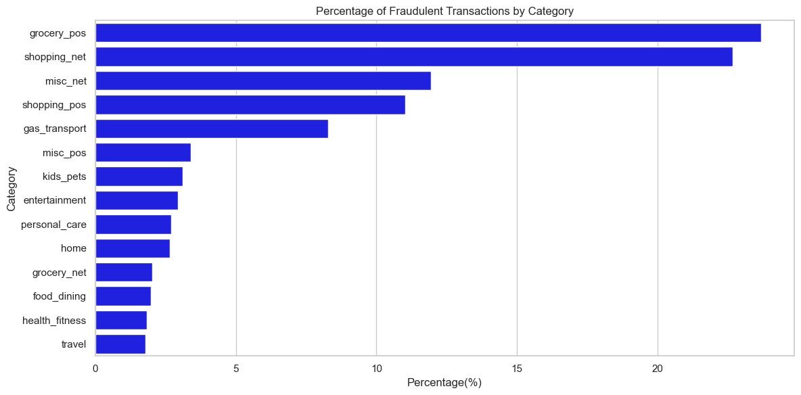
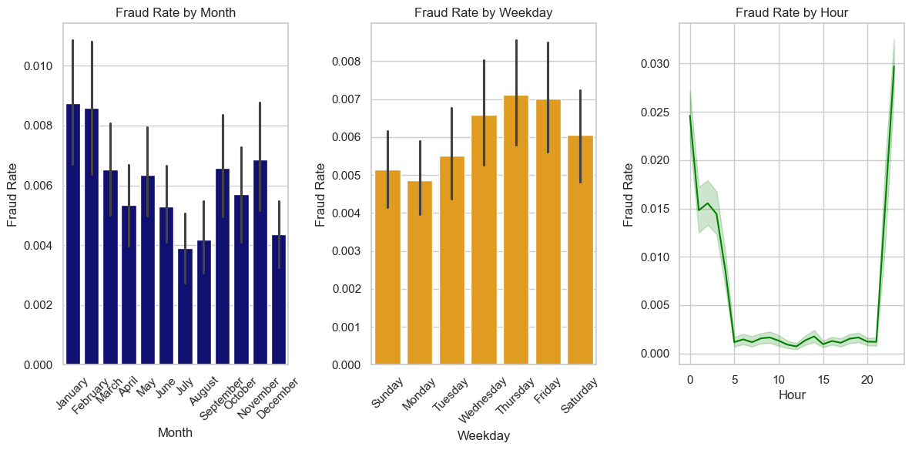

Fraud is rare, but expensive
Frauds per year
2020 covers part of the year only
Transaction amounts
Box: 25th–75th percentile and median. Whiskers reach 1.5× the box width, or the minimum and maximum. Legitimate amounts run up to $27,120 (off scale).
| Count | Mean | Median | 25th pct | 75th pct | Max | |
|---|---|---|---|---|---|---|
| Fraudulent | 3,936 | $527 | $369 | $240 | $901 | $1,334 |
| Legitimate | 667,092 | $68 | $47 | $10 | $82 | $27,120 |
Night-time and large amounts are the strongest signals
Fraud rate by age group
Over-60s are targeted most
Share of frauds by category
Notebook figure. Grocery at the till and online shopping lead.

When fraud happens
Notebook figure. Fraud rate jumps between 22:00 and 03:00, and is higher in January–February and Wednesday–Friday.

Gradient boosting ranks fraud best
Tuned model on the held-out test set
Histogram gradient boosting, tuned with RandomizedSearchCV (30 iterations), decision threshold 0.96
Confusion matrix
134,206 test transactions; counts derived from the reported precision, recall and support
| Flagged | Not flagged | |
|---|---|---|
| Fraud (787) | 282 | 505 |
| Legitimate (133,419) | 229 | 133,190 |
What the model would save a card issuer
On the 134,206 test transactions, using the test-set results above. Change the cost assumptions.
Assumes caught frauds average $527, the overall fraud average.